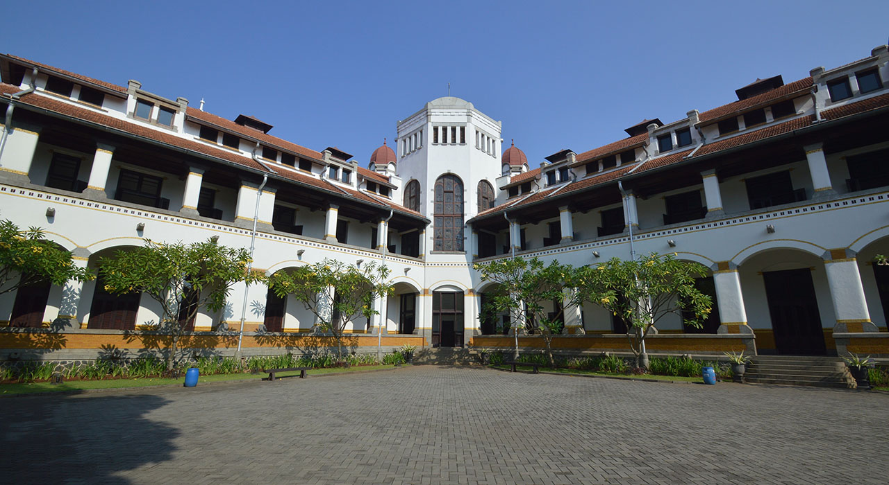

Jawa Tengah dan DIY , di paket 2 kita akan mengulik di jawa tengah yaitu di kota Semarang, Dieng, Jepara. Dan Mari kulik satu persatu wisata yang ada di kota tersebut.
Kita mulai dari Semarang, di kota ini memiliki banyak ragam wisata dan sejarah, salah satunya lawang sewu yang tepat berada di Jl. Pemuda, Sekayu, Kec. Semarang Tengah, Kota Semarang, Jawa Tengah 50132. Selain sejarah tersebut kota semarang juga banyak mempunyai kuliner dan wisata yang lain.
dan kita akan mengunjungi kurang lebih 2-3 obyek wisata yang berada disini. Setelah itu kita akan bernajak ke Dieng, yak di sini banyak obyek wisata alam salah satu-nya lembah dieng. disini memang pegunungannya tinggi sehingga bisa berubah ubah suhu udara yang berada disini.
Jika sudah kita akan ke Jepara, disini banyak wisata sejarah dan kuliner dan kita akan menyebrangi jepara ke pulau karimun jawa. Pulau yang terkenal akan eksotis air lautnya. Yang sangatlah terkenal karena terumbu karang yang indahnya.
Ini adalah serangkaian paket dua yaitu jawa tengah